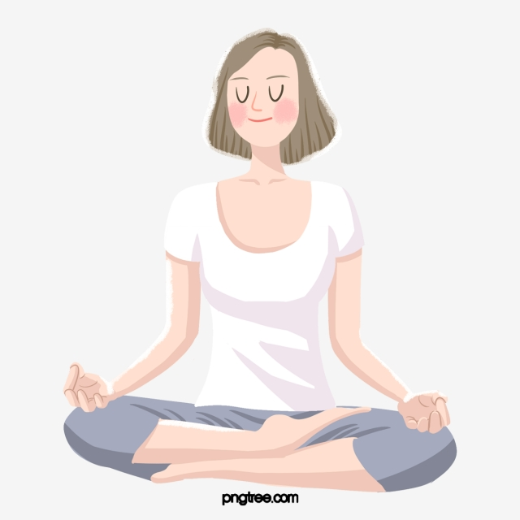

Terapias alternativas
|  |
¿Que son las terapias alternativas? Las terapias alternativas son un conjunto de tratamientos naturales no invasivos que se engloban denro de la medicina alternativa, tienen como finalidad el restablecimiento de la salud fisica y eomocional del paciente. Algunos ejemplos son: acupuntura, reflexologia, shiatsu, masaje ayurvédico, etc. Más informacion |
Constelaciones FamiliaresSe trata de un metodo que se usa para sacar a relucir los problemas que las personas tienen desde su niñez |
Terapia bioenergeticaEl analisis bioenergetico supone que una persona sana es una persona vital que goza de buena energia |
ReikiEL reiki te invita por un rato a despejar tu mente para que trabajes sobre los puntos energeticos que tiene tu cuerpo y asi destrabar la energia de ellos |
Medicina ayurvedicaUtiliza terapias naturales y hace hincapie en el cuidado de la dieta, el trabajo y la familia como puntos claves para mejorar y cuidar la salud |
Es el momento de trabajar en ti
Es momento de resolver lo que te limita para recuperar tu libertad y tener la paz emocional y mental que por naturaleza te pertenece
Podemos abandonar de forma efectiva y rapida los problemas que mas afectan hoy al ser humano. Las terapias nos ayuda a liberarnos de emociones a vivir sin culpas, liberar viejas creencias personales, familiares y de tu entorno, abandonar el uso de sutancias toxicas y crear una vida mas equilibrida tomando conciencia de la vida y mucho mas...
Recuerda que si estas leyendo esto es por que tu ser esta listo para resolver. No olvides lo mucho que te ha costado tu pasado, revisalo, te daras cuena que los daños son cuantitativos
Más informacion
TIPS
Curate a ti mismo
Equilibra tu energia
Clarifica tu mente
Siguenos en las redes


Escribenos: terapias@alternativas.com
Suscripcion al boletin de noticias
Recibe todas las novedades de un boletin de email semanal
Suscribirse